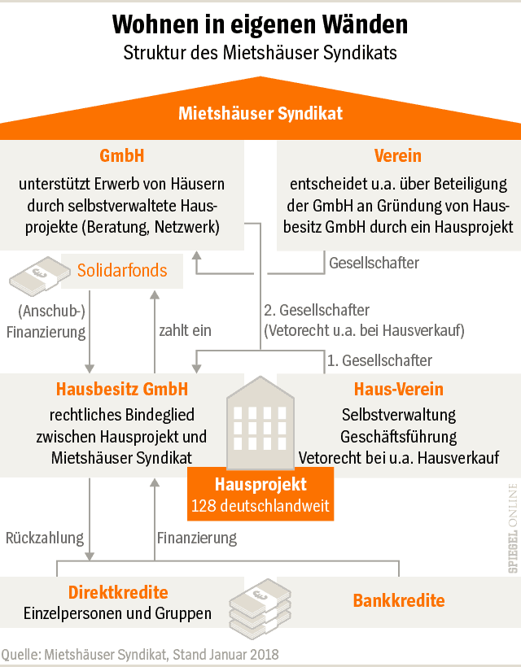

Jakob
Kurzbeschreibung (1–2 Sätze). Rolle/Schwerpunkt im Projekt.
Das Wohnprojekt soll ein Ort für Kinder sein. Dies ermöglichen wir durch ein familienfreundliches Mietmodell. Unser Zusammenleben organisieren wir in wöchentlich stattfindenden Plena. Wir haben eine solidarische Essenskasse und treffen uns häufig zu gemeinsamen Mahlzeiten. Neben Privatzimmern nutzen wir viele Räume gemeinschaftlich, u.a. zwei Küchen, ein großes Wohn- und Esszimmer, einen Arbeitsbereich, einen Wintergarten und einen großen Keller, in dem wir eine Werkstatt eingerichtet haben. In unserem großen Garten bauen wir Gemüse an. Darüber hinaus bietet er Platz zum Spielen und Entspannen, ob beim Lesen im Grünen, am gemütlichen Lagerfeuer oder beim Beobachten von Vögeln und Eichhörnchen.
Derzeit leben zwölf Personen in der Syntopie, darunter drei Kinder.
Wir wollen langfristig in den eigenen vier Wänden wohnen und brauchen daher eine Menge Geld. 😅 Wir würden uns freuen wenn ihr uns bei unserem Hauskauf mit Direktkrediten unterstützen könntet. Wie das genau funktioniert wollen wir hier kurz aufzeigen.


Die Satzung des Syntopie e.V. setzt fest, dass der Verein das gemeinschaftliche Wohnen fördern soll. Alle Mitglieder:innen sind gleichzeitig Bewohner:innen. Entscheidungen treffen wir wenn möglich einstimmig, ansonsten per 2/3-Mehrheit. Zwischen den Mitglieder:innen und dem Verein besteht ein Untermietverhältnis. Der Verein ist der Hauptmieter des Hauses, der von seinen Mitglieder:innen also folglich die monatliche Miete als Einnahme verbucht. Desweiteren nimmt der Verein Mitgliedsbeiträge ein, um hiervon gemeinsame Anschaffungen zu finanzieren. Einmal im Jahr erstellen wir eine Einnahmenüberschussrechnungen in der Mieten, Mitgliedbeiträge und Ausgaben bilanziert werden.
Aber was heißt „Syntopie“ eigentlich? Syntopie ist ein Kofferwort, gebildet aus „Syntop“ und „Utopie“. Ein Syntop (altgriechisch syn „zusammen, gemeinsam“ und topos „Ort“) ist ein Lebensraum, in welchem verschiedene Arten oder Populationen koexistieren. Eine Utopie (altgriechisch ou „nicht“ und topos, also „Nicht-Ort“) ist der Entwurf einer möglichen, zukünftigen, meist aber fiktiven Lebensform oder Gesellschaftsordnung. Eine Syntopie ist nach unserem Verständnis demnach eine Synthese von Individualität und Gemeinschaft. In unserem Wohnprojekt heißen wir Vielfalt willkommen und möchten individuelle Entfaltung ermöglichen. Zugleich wollen wir sowohl unser Zusammenleben als auch Haus und Garten nach gemeinschaftlich ausgehandelten Vorstellungen, unabhängig von tradierten Lebensentwürfen, gestalten.
In Zukunft ist vorgesehen eine GmbH zu gründen, die das Haus kauft und es an seiner Bewohner:innen vermietet. Die dann gegründete Hausbesitz GmbH hat als Gesellschafter den Syntopie e.V und das Mietshäusersyndikat. Somit kontolliert der Verein die GmbH und die Entscheidungen werden analog zu dem bisherigen Vorgehen getroffen. Das Mietshäusersyndikat hat auf Entscheidungen des täglichen Lebens keinen Einfluss. Dieses nimmt lediglich sein Vetorecht war, falls wir uns dazu entscheiden würden, das Haus zu verkaufen.
Der Syntopie e.V bleibt also weiterhin bestehen, auch wenn im Fall des Hauskaufs der Eigentümer des Hauses die Hausbesitz GmbH ist.
Wir sind ein Verein aus 12 Menschen, die gemeinschaftlich wohnen, Verantwortung teilen und das Projekt langfristig tragen. Hier bekommst du ein Gesicht zu dem, was du unterstützt.
Kurzbeschreibung (1–2 Sätze). Rolle/Schwerpunkt im Projekt.

Kurzbeschreibung (1–2 Sätze). Was motiviert die Person?

Kurzbeschreibung (1–2 Sätze). Aufgaben im Verein.

Kurzbeschreibung (1–2 Sätze). Lieblingsaspekt am Projekt.

Kurzbeschreibung (1–2 Sätze). Hintergrund/Skill.

Kurzbeschreibung (1–2 Sätze). Was bringt die Person ein?

Kurzbeschreibung (1–2 Sätze). Rolle/Schwerpunkt.

Kurzbeschreibung (1–2 Sätze). Motivation.

Kurzbeschreibung (1–2 Sätze). Aufgaben im Projekt.

Kurzbeschreibung (1–2 Sätze). Fokus/Skill.

Kurzbeschreibung (1–2 Sätze). Warum Syntopie?

Kurzbeschreibung (1–2 Sätze). Beitrag im Verein.

Es handelt sich um ein sanierten Altbau mit Anbau aus dem Jahr 2017. Rund 400 m² Wohnfläche stehen der Wohngemeinschaft zur Verfügung, außerdem bietet ein großer Garten Platz zur Erholhung und zum Gemüseanbau. Im Keller befindet sich eine Holz- und eine Kermamikwerkstatt. Der Keramikbrennofen steht hierbei auch anderen Menschen in Frankfurt und Umgebung zum Brennen zur Verfügung.
Das Haus besitzt 10 Zimmer, 5 Bäder, 2 Küchen und ein Wohnzimmer, sowie ein Arbeitsbereich für Homeoffice. Alles ist in gutem Zustand und muss ersteinmal nicht saniert werden. Allerdings sind die meisten Zimmer nicht größer als ca. 25 m². Da wir hier aber zu mehr als 12 Personen wohnen werden und wir als Gemeinschaftsräume nur 2 Küchen und ein Wohnzimmer haben, wobei im Neubauteil des Hauses Küche, Wohnzimmer und der Arbeitsbereich ein Raum bilden, ist es zu eng um hier langfristig und dauerhaft wohnen zu können. Daher besteht für uns als Bewohner:innen der Wunsch einen An- bzw. Ausbau des Hauses vorzunehmen. Das Grundstück liegt im Rand von Frankfurt-Unterliederbach und mit Fahrad und Bus gut von dem Höchster Bahnhof zu erreichen. Mit den öffentlichen Verkehrsmitteln ist man in etwa 40min an der Hauptwache in Frankfurt. Mit dem Auto ist man über die A66 ebenfalls sehr schnell in Frankfurt und Umgebung. In der Nähe zum Haus gibt es Spielplätze und Supermärkte. Auf dem Grundstück befinden sich drei PKW-Stellplätze. Im Garten haben wir mehrer Gemüse- und Kräuterbeete angelegt, die einen Teil unsers Bedafs decken. Ob Kürbis oder rote Beete, ob Schnittlauch oder Koriander, wir lieben es und haben viel Spaß bei Anbau und der Ernte. Gerade für die Kinder ist es wichtig zu sehen wo die Dinge herkommen. Im hinteren Teil des Garten sind zahlreiche große und hohe Bäume vorhanden, die im Sommer kühlen und auch ein gewissen Lärmschutz gegenüber der Autobahn bieten.Um das Haus zu kaufen, müssen wir einen Bankkredit aufnehmen. Allerdings fordert die Bank dafür ca. 20% Eigenkapital, was in unserem Fall etwa 200.000€ beträgt. Zudem würde eine große Kreditsumme bei der Bank auch eine hohe jährliche Zins- und Tilgungsrate bedeuten. Um die Mieten so gering wie möglich zu halten ist daher ein hohes Eigenkaptial geboten. Dieses Eigenkaptal finanieren wir durch sog. Direktkredite.
Direktkredite sind private Darlehen an unser Projekt, genauer der Hausbesitz GmbH. Diese Kredite sind dem Bankkredit nachgeordnet, werden also im Fall der Insolvenz der GmbH erst nachrangig bedient. Genau dieser Mechanismus ermöglicht uns diese Kredite als Eigenkapital zu nutzen. Nichts desto trotz handelt es sich bei Direkkrediten um Kredite, die auch Zinsen und Tilgungen beinhalten.
In den meisten Fällen sind die Direktkredite endfällig und haben einen Zins von weniger als 2%. Da die Laufzeit in der Regel mehrere Jahre beträgt, wird so die jährliche Zins- und Tilgungslast für uns deutlich reduziert. Daher suchen wir nach Direktkreditgebern, die mit uns einen indivduellen Kreditvertrag abschließen möchten. Wir wollen ehrlich sein: Direktkredite sind vor allem ein solidarisches Instrument und bieten durch ihre geringe verzinsung kaum finanzelle Anreize. Ohne diese Kredite ist es uns allersings nicht möglich das Wohnprojekt in ein Wohnprojekt mit Eigentum zu überführen.
Wenn du einen Direktkredit anbieten möchtest, findest du die Kontaktdaten und Kreditmodelle im Abschnitt „Direktkredit anbieten“ am Ende der Seite.
Wir haben vor als Verein und GmbH dem Verein des Mietshäusersyndikats anzugehören. So bleibt das Haus dauerhaft gemeinschaftlich und kann nicht privatisiert werden. Das Mietshäusersyndikat tritt als zweiter Gesellschafter der Hausbesitz GmbH auf. Somit hat der Syntopie e.V. und das Mietshäusersyndikat ein Vetorecht in der Hausbesitz GmbH. Das Mietshäusersyndikat hat sich zum Ziel gesetzt Wohnprojekte zu unterstützen und dabei ein Netzwerk von Häusern schaffen, dass dem Mietmarkt dauerhaft entzogen ist. Für weitere Informationen:
Mietshäusersyndikat
Der Kredit ist nicht ohne Risiko, denn wenn die Hausbesitz GmbH insolvent ist, kann es auch passieren, dass Direktkredite nicht zurückgezahlt werden können. Dies ist allerdings sehr unwahrscheinlich, da die Insolvenzmasse weiterhin wertvoll wäre, denn ein Haus und Grunstück wäre in Frankfurt am Main in der Zukunft wohl immernoch von Wert. Vorallem aber sind die Mieteinnahmen der GmbH sehr sicher, weshalb schon die Insolvenz unwahrscheinlich ist.
Der Kredit bietet keinen finanzellen Vorteil der Vergleichbar mit Tagesgeldkonten, Anleihen oder Aktien wäre. Er ist vorallem eine solidarische Unterstützung für uns als Wohnprojekt.
Zunächst keine besonders große. Es tritt vor allem als Berarter auf, der uns bei der Gründung der GmbH und der Ausgestaltung der Direktredite unterstützt.
In der Regel nicht, da ein Direktkredit eine Laufzeit hat, an die beide Seiten vertraglich gebunden sind. Wir können aber in bestimmten Fällen sicherlich eine individuelle Lösung finden.
Ein endfälliger Kredit wird erst am Ende seine Laufzeit getilgt. Also nicht jährlich zwischendurch, sondern nach so und so vielen Jahren
Wir freuen uns über dein Interesse uns einen Direktkredit zu geben. Melde dich gerne unter:
Unterstütze unser Hausprojekt mit einem Direktkredit – und wähle das Modell, das zu dir passt. Neben fairen Zinsen erhältst du eine besondere Syntopie-Prämie als Zeichen unserer Wertschätzung.
1,5–2 % Zinsen
ab 5 Jahre Laufzeit
ab 1.000 €
"Aller Anfang ist schwer, aber Hauptsache man fängt an" Gundula Grundstück
1–2 % Zinsen
ab 8 Jahre Laufzeit
ab 1.000 €
"Zeit ist Geld" Benjamin Franklin
0–1 % Zinsen
ab 10 Jahre Laufzeit
ab 10.000 €
"Machen ist wie wollen, nur krasser" Felix von Bares
0–1 % Zinsen
ab 15 Jahre Laufzeit
ab 10.000 €
"Haben ist besser als brauchen" Warren Buffett
0–1 % Zinsen
15 Jahre Laufzeit
ab 100.000 €
+ Ehrenmitgliedschaft, Namensschild im Garten,
Urkunde & optionaler Pressetermin
Schreib uns, welchen Betrag du dir vorstellen kannst und welche Laufzeit bzw. welchen Zins du dir wünschst.